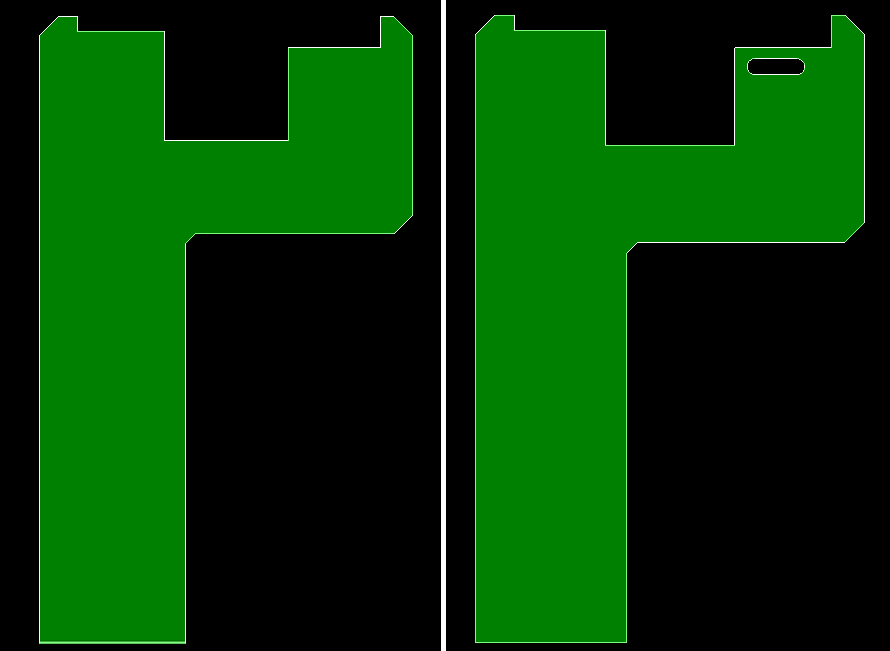
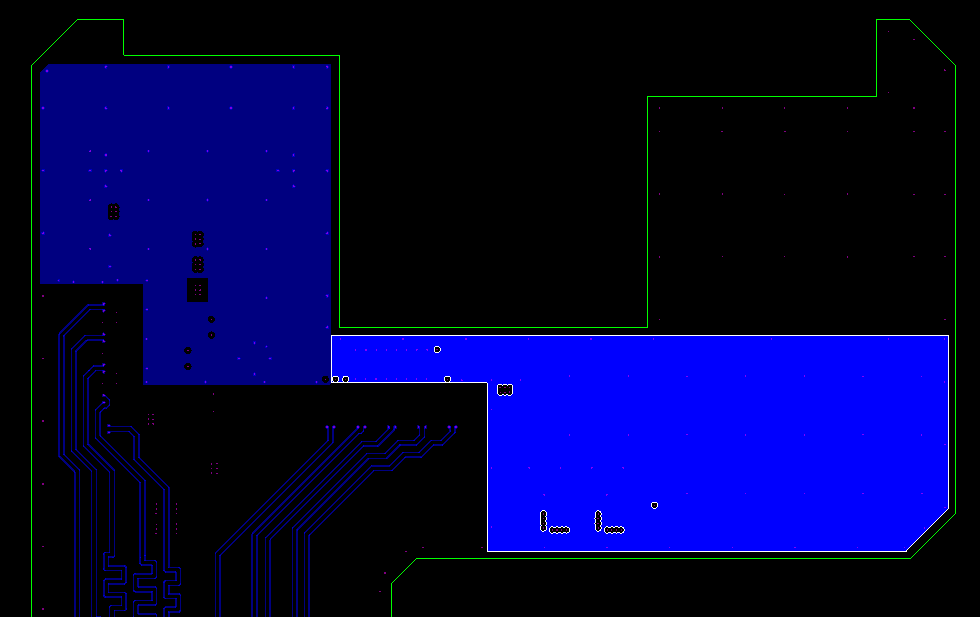
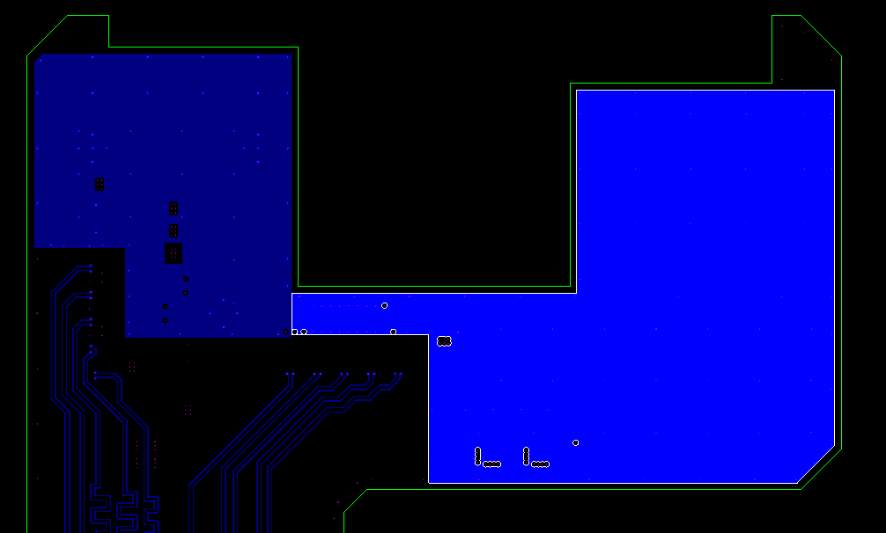
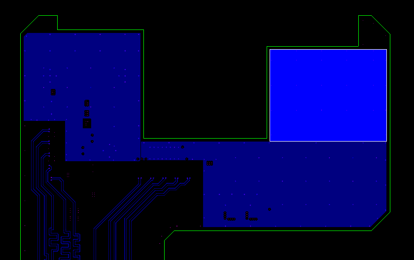
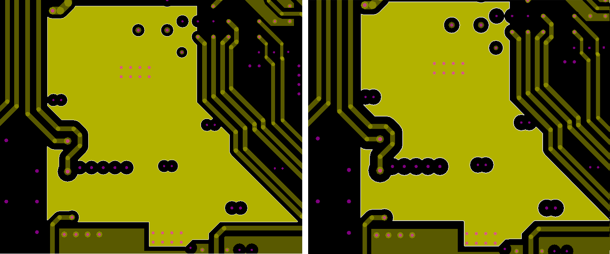

Working with Shapes¶
The physical data model of a PCB describes the stackup, materials and geometries. Shapes are defined as geometries (GeoItem) of a PCB. Here the Physical data model is described in more detail.
The shape geometries on the PCB are represented as “ShapeGI”. This class is a subclass of the “GeoItem” class.
Modify a Shape¶
Modify PCB outline¶
In this example, we will add a slot hole to the outline of our PCB.
Preparations:
import cst.interface
from cst.eda import pcb_api
from cst.eda import geometry2d
import cst.units
from pathlib import Path
import tempfile
data_dir = Path(cst.interface.install_paths.root()) / "Online Help" / "PythonTutorial" / "data"
de = cst.interface.DesignEnvironment.connect_to_any_or_new()
project_dir = Path(tempfile.mkdtemp())
print(f"Working in temporary directory: {project_dir}")
pcb_file = data_dir / 'cst_phone.tgz'
Now we start modifying geometries:
# Create an instance of a PCB
pcb = pcb_api.PCB.convert_from(pcb_file)
# Get the current outline of the PCB
outline = pcb.get_outline()
# Create an empty SegmentString
new_hole = geometry2d.SegmentString()
# Describe a slot hole by appending lines and arcs
new_hole.append_line((1700, 3550), (1950, 3550))
new_hole.append_arc((1950, 3450), radius=50, orientation=-1)
new_hole.append_line((1700, 3450))
new_hole.append_arc((1700, 3550), radius=50, orientation=-1)
# Insert the created hole into the outline
outline.holes.append(new_hole)
# Set the new outline as the outline of the PCB
pcb.set_outline(outline)
# create a new PCBS project
prj_2d = de.new_pcbs()
# copy the PCB into the project, replacing the previous (empty) design
prj_2d.pcbs.set_pcb(pcb)
After creating the instance of the example PCB, we can get the PCBs outline using pcb.get_outline().
This returns a “geometry2d.Shape” object, which we call “outline”.
Next, we create the “new_hole”.
We start it as an empty “geometry2d.SegmentString” and append lines and arcs according to the shape we want to create.
Once we appended the first segment, we only need to pass the end point of the next segment.
The end point of the previous segment is used as start point if only one point is passed.
When appending arcs,
we choose the orientation “-1” as we want the arc to run clockwise from the first to the second point we passed.
The overall orientation of the shape is not important to the API.
This means we could also define the “new_hole” the opposite way, and it would generate the same result.
Be sure to use the correct unit when defining the SegmentString. By default these values will have the same unit as the PCB.
After defining the segment string we can add it as a hole to our shape “outline”.
Here we simply call outline.holes.append(new_hole).
Before importing the PCB to a project, we first need to set the altered shape as the outline of the PCB.
So we call pcb.set_outline(outline).
Now we can import the PCB.
The images below show the original outline (left) and the altered outline (right) of the example PCB.

Modify the shell of a ShapeGI¶
In this chapter, we will be modifying the shell of a ShapeGI. The original ShapeGI is highlighted in the image below. The goal is to extend the shape into the top right area of the PCB.

# use `pcb`
# Specify Layer
layer = pcb.layer("SIGNAL_HS_1")
# Specify Net
net = pcb.net("GND")
After creating the pcb_file as usual, we define the layer and net that we want to work on.
In this case, the shape is on the “SIGNAL_HS_1” layer and belongs to the “GND” net.
This combination of net and layer has multiple shapes that belong to it.
We created a function that returns the pcb_api.ShapeGI that is the furthest right.
The function is defined as get_most_right_shape() and can be seen below.
def get_most_right_shape(layer: pcb_api.PCB.layer, net: pcb_api.PCB.net) -> pcb_api.ShapeGI:
"""Find ShapeGI, that is the furthest right"""
shape_right = max(
layer.geo_items(shapes=True, net=net),
key=lambda shape: geometry2d.BoundingBox(shape.get_geometry().shell).center.x,
)
return shape_right
# Get Shape, that is the furthest right
shape_gi = get_most_right_shape(layer, net)
shape = shape_gi.get_geometry()
shell = shape.shell
# Create segments, to be added
lines = []
lines.append(geometry2d.Line((2342, 3004), (2342, 3594)))
lines.append(geometry2d.Line((2342, 3594), (1594, 3594)))
lines.append(geometry2d.Line((1594, 3594), (1594, 3004)))
From the returned “ShapeGI” we can get the geometrical “Shape” by using the method get_geometry().
Now that we have defined the shape that we want to modify as “shape”, we can get its shell geometry.
This we save as “shell”.
Next, we create a list of Segments, we want to insert into the shell.
For this, we first need to define what position in the “shell” we want to add the list of Segments.
Here we want to replace the top-most segment with the largest Y position.
So we create the function get_index_of_top_segment(),
that finds the index of the top-most Segment in the given SegmentString.
The function can be seen below.
def get_index_of_top_segment(shell: geometry2d.Shape.shell) -> int:
"""Find the index of the segment that is the highest in the shell"""
def key_pred(val):
_, segment = val
return (segment.start.y + segment.end.y) / 2
index, _ = max(enumerate(shell), key=key_pred)
return index
Using that,
# Set index
index = get_index_of_top_segment(shell)
# Create a new SegmentString with the first few segments of the original shell
new_shell = geometry2d.SegmentString(shell[:index])
# Add the new Segments
new_shell.extend(lines)
# Add the rest of the segments of the original shell
new_shell.extend(shell[(index + 1) :])
# Set new shell as shell of shape
shape.shell = new_shell
# Update the geometry of the right shapeGI to the new shape
shape_gi.set_geometry(shape)
# create a new PCBS project
prj_2d = de.new_pcbs()
# copy the PCB into the project, replacing the previous (empty) design
prj_2d.pcbs.set_pcb(pcb)
Using the index, we can create a new SegmentString “new_shell”
with the Segments of the original shell up to the segment at the position of the index.
Then we extend “new_shell” using new_shell.extend() and passing the defined list of Segments.
Finally, we can extend “new_shell” with the rest of the Segments of the original shell, to complete the shell.
We now set “new_shell” as the shell of the original shape. The shape now has to be set as the geometry of the ShapeGI again.
To check the results, we import the PCB to a project. In the image below, the modified ShapeGI is highlighted.

Create a Shape¶
For this example, instead of enlarging the existing shape like in “Modify the shell of a ShapeGI”, we want to create a new shape that fills the area.
# Create an instance of a PCB
pcb = pcb_api.PCB.convert_from(pcb_file)
# Specify Layer
layer = pcb.layer("SIGNAL_HS_1")
# Specify Net
net = pcb.net("GND")
Again, we first define the PCB.
Using the PCB, we define the layer and net we are working with.
Here we also create a list of coordinates for the shape we want to create.
To create a “geometry2d.Shape” from a list of coordinates, we added the function create_shape_from_coord_list.
def create_shape_from_coord_list(coords: list, *, hole_list: list = None) -> geometry2d.Shape:
"""Create a Shape from a list of coordinates"""
ext_curve = geometry2d.Curve.create_polyline(coords)
holes = []
if hole_list:
for hole in hole_list:
holes.append(geometry2d.Curve.create_polyline(hole))
shape = geometry2d.Shape(ext_curve, holes)
return shape
# Define Shape coordinates as a list of coordinates
shape_coords = [(1594, 3594), (1594, 3004), (2342, 3004), (2342, 3594)]
# Create a new ShapeGI from the coordinates
new_shape = create_shape_from_coord_list(shape_coords)
# add new shape
layer.create_shape(new_shape, net)
# net.create_shape(new_shape, layer)
# create a new PCBS project
prj_2d = de.new_pcbs()
# copy the PCB into the project, replacing the previous (empty) design
prj_2d.pcbs.set_pcb(pcb)
This function expects a list of coordinates for the shell and optionally a list of coordinate lists for holes.
The function checks if the passed coordinates result in a closed shape,
if not, the first coordinate is added to the end of the list.
Then “ext_curve” is created using geometry2d.Curve.create_polyline and passing the coordinates.
If the list of coordinates for the holes is not empty, for each hole,
a polyline is also created and appended to the list “holes”.
Now the “shape” is created using “ext_curve” for the shell and the created list of polylines for the holes.
This is done using geometry.Shape(ext_curve, holes).
The created shape is returned from create_shape_from_coord_list and saved as “new_shape”.
Using layer.create_shape(new_shape, net) we can create “new_shape”
on the layer in the net that where both defined earlier.
It also is possible to call net.create_shape(new_shape, layer) instead.
The result is the same.
The image below shows the newly created shape on the defined layer.

Advanced Geometry Operations¶
This chapter will go over how to retrieve and work with the shapes of our PCB using a third-party Python geometry package.
# Create an instance of a PCB
pcb = pcb_api.PCB.convert_from(pcb_file)
# Specify Layer
layer = pcb.layer("PWR_PLANE2_N_CTRL")
# Specify Net
net = pcb.net("VSYS")
# Get all Shapes from this Layer and Net
shape_items = layer.geo_items(shapes=True, net=net)
The main idea of the procedure we will show here is to convert our ShapeGI to a commonly used format. Then change the geometry and convert it back to a ShapeGI. Here we use the Shapely library as it uses similar definitions for shapes.
As usually we first create an instance of our example PCB using pcb_api.PCB.convert_from().
Since shapes and traces are both GeoItems, the procedure of retrieving a shape is similar to the
procedure for traces.
We specify from what layer and net we want the shapes, using pcb.layer() and pcb.net().
Now we can get a list of all the shape items on the layer
that are in the net using layer.geo_items(shapes=True, net=net).
To change the geometry of the shape, we will be using the Shapely library.
To convert a shape to a
”shapely.Polygon”
we created the function create_shapely_polygon_from_shape() shown below.
We pass the shape and the “max_facet_length” that we want.
The “max_facet_length” describes the maximum length of facets in arc approximations for the shape.
from shapely import Polygon
def create_shapely_polygon_from_shape(geometry: "geometry2d.Shape", max_facet_length: float) -> Polygon:
"""Create a shapely polygon from Shape"""
shell = geometry.shell.approximate_polyline(max_facet_length)
holes = []
for hole_geom in geometry.holes:
holes.append(hole_geom.approximate_polyline(max_facet_length))
return Polygon(shell, holes)
The function extracts the shell and holes from our shape and creates a shapely.Polygon using these values. The polygon is then returned. Now we can modify this polygon using other methods from the Shapely library. In the main code, we erode the polygon, using the ”buffer” method and pass a negative value. This creates a smaller shape that has a larger clearance distance to the drills and other shapes in our PCB.
# Convert the shape_item to a shapely.Polygon
shapely_polygon = create_shapely_polygon_from_shape(shape_items[0].get_geometry(), 100 * pcb.tolerance)
# Erode Polygon
eroded_polygon = shapely_polygon.buffer(-2)
Then we want to convert it back into a ShapeGI to insert this shape into the PCB.
For this, we created another function.
create_shape_from_shapely_polygon() is shown below.
def create_shape_from_shapely_polygon(polygon: Polygon) -> geometry2d.Shape:
"""Create a geometry2d.Shape from a shapely Polygon"""
ext_curve = geometry2d.Curve.create_polyline(polygon.exterior.coords)
holes = []
for linearring in polygon.interiors:
holes.append(geometry2d.Curve.create_polyline(linearring.coords))
shape = geometry2d.Shape(ext_curve, holes)
return shape
# Convert eroded shapely.Polygon to a ShapeGI
eroded_shape = create_shape_from_shapely_polygon(eroded_polygon)
# Remove original shape
shape_items[0].delete()
# add eroded shape
layer.create_shape(eroded_shape, net)
# create a new PCBS project
prj_2d = de.new_pcbs()
# copy the PCB into the project, replacing the previous (empty) design
prj_2d.pcbs.set_pcb(pcb)
Here the properties of the shapely.Polygon are used to create a geometry2d.Shape. The created shape is then returned.
Before we insert the shape to our PCB, we delete the original shape.
Then we use the layer.create_shape() function and pass the shape and what net it should be added to.
Alternatively we could use the net.create_shape() function and pass the layer instead.
But this would not work if the erosion caused the original shape to split into two separate shapes.
The original (left) and resulting (right) shape are shown in the image below.

We can see that the original shape was eroded. This can be seen well in the top right corner of the shape, where two cutouts for the drills were combined into one due to the modifications we made.